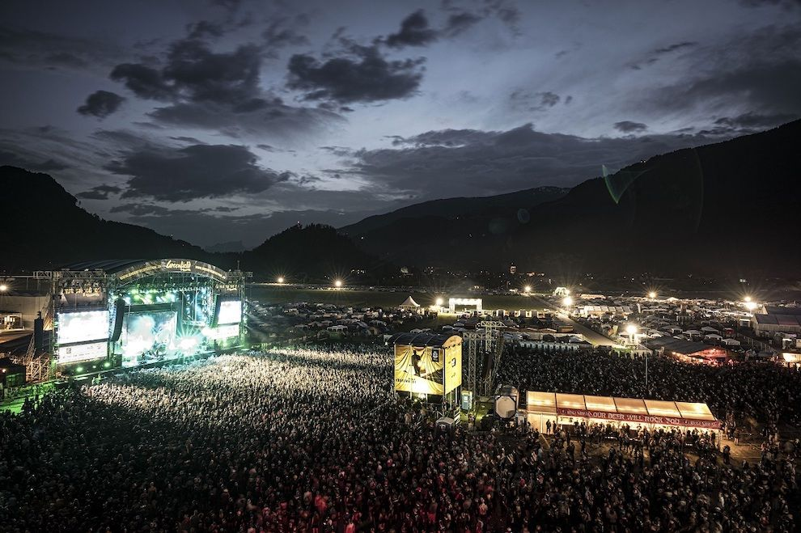

Subgenres
Eine Einführung in eines der vielfältigsten und einflussreichsten Musikgenres.
Bekannte Subgenres
Metal hat sich in unzählige Subgenres aufgespalten, jedes mit seinem eigenen, einzigartigen Sound.
- Nu Metal: Kombiniert tiefergestimmte, rhythmische Gitarrenriffs mit Elementen des Hip-Hop wie Sprechgesang und DJ-Scratching.
- Heavy Metal: Der klassische Sound, bekannt durch Bands wie Iron Maiden und Judas Priest.
- Thrash Metal: Schneller, aggressiver und rhythmisch komplex, geprägt von Metallica und Slayer.
- Alternativ Metal: Verbindet die schweren Riffs des Heavy Metal mit der experimentellen Herangehensweise und den unkonventionellen Songstrukturen des Alternative Rock.
- Death Metal: Charakterisiert durch Gutturalgesang, stark verzerrte Gitarren und extrem schnelle Schlagzeugparts.
- Black Metal: Oft mit einer rohen Produktion, schrillem Gesang und atmosphärischen Klanglandschaften.
- Melodic Death Metal: Kombiniert die Härte des Death Metal mit sehr harmonischen und eingängigen Gitarrenmelodien.
